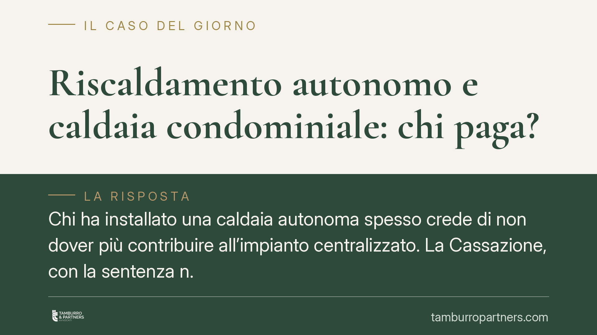

Riscaldamento autonomo e caldaia condominiale: chi paga?
Chi ha installato una caldaia autonoma spesso crede di non dover più contribuire all'impianto centralizzato. La Cassazione, con la sentenza n. 1098/2026, ribadisce che non è così: il condomino distaccato resta obbligato alle spese di manutenzione straordinaria e conservazione, salvo che il distacco sia fisico, effettivo e irreversibile. Vediamo cosa cambia in concreto.

Il caso
La questione è ricorrente: un condomino sostituisce l'allaccio all'impianto centralizzato con una propria caldaia autonoma e, da quel momento, smette di pagare le relative spese. L'amministratore gli addebita comunque la quota per gli interventi straordinari sulla caldaia comune. Chi ha ragione?
La Corte di Cassazione, con la sentenza n. 1098/2026, conferma un orientamento ormai consolidato: il distacco dall'impianto centralizzato non libera automaticamente dalle spese. La soluzione dipende dalla distinzione tra spese di consumo e spese di conservazione del bene comune.
Inquadramento normativo
La norma di riferimento è l'art. 1118, comma 4, del Codice civile. La disposizione consente al condomino di rinunciare all'uso dell'impianto centralizzato di riscaldamento o condizionamento, a due condizioni: che dal distacco non derivino notevoli squilibri di funzionamento e che non ne risultino aggravi di spesa per gli altri condomini.
Lo stesso comma precisa però un punto decisivo. Anche in caso di distacco legittimo, il condomino "resta tenuto a concorrere al pagamento delle sole spese per la manutenzione straordinaria dell'impianto e per la sua conservazione e messa a norma".
In altri termini, il legislatore distingue nettamente due voci:
- le spese di consumo (combustibile, energia), che il condomino distaccato non deve più sostenere perché non utilizza più il servizio;
- le spese di conservazione (manutenzione straordinaria, messa a norma, interventi che mantengono in vita il bene comune), che continuano a gravare su di lui in quanto comproprietario dell'impianto.
La Cassazione precisa inoltre che il distacco rilevante è quello fisico, effettivo e irreversibile. Non basta chiudere una valvola o smettere di accendere i termosifoni: occorre una disconnessione tecnica reale dell'unità immobiliare dalla rete comune, documentabile e non facilmente reversibile.
Implicazioni pratiche
Per il condomino con riscaldamento autonomo il principio è chiaro: la caldaia centralizzata resta un bene comune anche per chi non la usa più. Finché quell'impianto esiste nelle parti comuni, chi è comproprietario concorre alla sua conservazione.
Concretamente, questo significa che l'addebito delle spese di manutenzione straordinaria della caldaia è legittimo anche verso chi ha la propria. Non lo è, invece, l'addebito dei consumi di combustibile, salvo che il distacco non risulti correttamente formalizzato.
La distinzione pesa anche sul fronte opposto. L'amministratore che inserisca il condomino distaccato tra i debitori delle spese di consumo espone il condominio a contestazioni fondate. Serve quindi una ripartizione precisa, tenendo separate le due voci nel bilancio e nei riparti.
Attenzione anche alla validità del distacco. Se il distacco provoca squilibri termici all'impianto o aggravi di costo per gli altri, l'assemblea può opporsi e il condomino può essere chiamato a contribuire anche alle spese di consumo. La prova dell'assenza di squilibri e aggravi grava, di regola, su chi si distacca.
Cosa fare in concreto
- Verificare la natura del distacco. Accertare se la disconnessione è fisica e irreversibile, con documentazione tecnica (relazione di un tecnico abilitato) a supporto.
- Separare le voci di spesa. Consigliamo di distinguere sempre, nel riparto, le spese di consumo da quelle di conservazione e manutenzione straordinaria.
- Comunicare il distacco per iscritto. Informare l'amministratore e l'assemblea prima di procedere, allegando la perizia che attesti l'assenza di squilibri e aggravi.
- Controllare il titolo dell'addebito. Prima di contestare una quota, individuare se riguarda consumo o conservazione: solo la prima è esclusa per il distaccato.
- Non attendere il decreto ingiuntivo. In caso di dubbio sul riparto, è preferibile sollevare la questione in sede assembleare o chiedere una verifica, piuttosto che limitarsi a non pagare.
La regola di fondo resta semplice: ci si può sottrarre al consumo, non alla comproprietà. Finché la caldaia comune esiste, chi ne è titolare partecipa a tenerla in vita.
---
*Contributo informativo a cura di Tamburro & Partners - Avv. Giuseppe Tamburro. Non costituisce parere legale.*
Ogni condominio ha una storia a sé.
Se gestisci un'amministrazione e vuoi un confronto su una specifica questione condominiale, scrivi allo studio. Ti rispondiamo entro un giorno lavorativo.